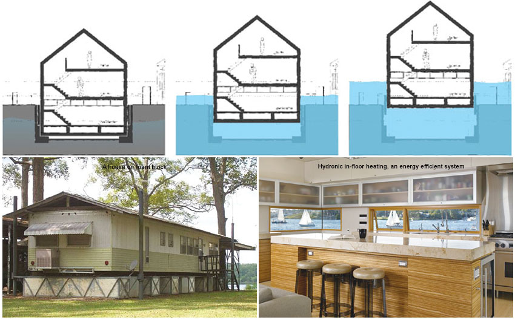
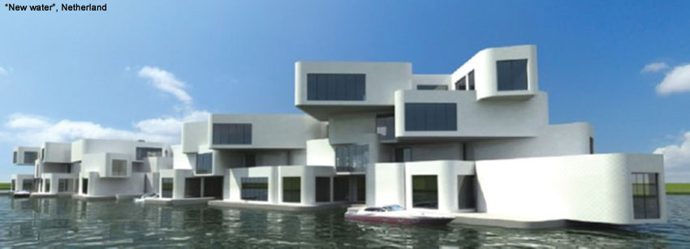

"Floating" term in the foundation engineering is used when the soil beneath the footing does not experience any extra load, as the load of the structure is equal or less than the soil displaced. Floating houses are similar in concept and can be defined those houses which are constructed on water in a way that the load of the structure is equal or less than the uplift force of the water which helps in floating the house on water. Traditional houses like houses on boats have mobility while now floating houses are considered those houses which are used as living spaces on water that are minimally mobile other than moving vertically with the tide. Unlike a houseboat, a float house is not self-propelled though some smaller float houses can be propelled by attaching an outboard motor to them. Holland has many float houses as they have started using water as a resource for construction of houses.
Traditional floating houses, normally houseboats, were built in various countries in the places prone to floods, near coast lines and on the lakes and rivers. In Australia, especially on the Murray River and the sunny coastline of Queensland, there are many motorised pontoon based houseboats with two or more bed rooms, some of them even have multi-storeyed structure. Houseboats are also in Lake Eldon in Victoria and in Hawkesbury River near Sydney. Similarly floating houses/houseboats are available in Canada, Germany, Hong Kong, Laos, New Zealand, Serbia, UK, USA, Thailand and India. In India, houseboats have been traditionally constructed in Kashmir, Kerala and in Assam. Houseboats are also very popular for recreational activities for groups of people of all ages but for residential purposes, it is Holland where houses are designed, constructed and are in high demand.
Floating houses are now constructed which float only during floods. Thus, there are two types of floating houses, one which permanently float and other that float only during flood waters else get placed on ground, particularly during dry season when there is no water. Some houses which were constructed on stilts or piles due to safety requirements during floods in many parts of the world and in India too, like in West Bengal, Assam and other parts, are not actually floating houses in true sense. Floating houses are in true sense are those which do not require foundation and are based on the principle of buoyancy thus are also called buoyant homes. Thus the base of the structure needs to be such that it helps in floating as well able to take the dead load of the house, live load and other loads to be encountered by the house. Thus the house may be constructed on boats, hollow pipes, light weight pads and similar materials which help in the floating as well taking up loads. Flotation Systems now being used include log floats, solid Styrofoam encased in rubber, foam filled steel pontoons, positive concrete, concrete ferrocement pontoons, concrete and foam, wood and foam, polyethylene shell with solid core polystyrene block moulded inside, fibreglass etc.
Houses which get uplift during floods and move down during conditions when no water is there are guided vertically, telescopically. A steel frame that holds the flotation blocks is attached to the underside of the house. There are four 'vertical guidance' poles not far from the corners of the house. The tops of the poles are attached to the steel frame. The poles telescope out of the ground, allowing the house to move up and down.
Floating House on Steel PontoonIn low lying country like Holland, planning was focused on separating and maintaining the division between land and water by reclaiming land from the sea by building dams and heightening dikes. But the need to construct safe and economic houses where two-thirds of the population lives below sea-level, Dutch planners started looking to make use of water as a resource itself. Problem became further acute in the last decade due to global warming leading to rising water coupled with several unusually dry summers. The sea level is said to have risen by 20 centimetres in the last century and is expected to rise by three times that amount in the 21st century. Therefore floating houses is becoming a necessity in the coming years.
One Dutch construction company, recognising the growing scarcity of land in the Netherlands started to build houses on water. Ooms Bouwmaatschappij has built the first eight of 500 planned floating houses on the outskirts of Amsterdam, the capital of the world's third most densely populated country. The houses, which are designed to withstand gales, are built on floating platforms. Frits Schoute, a former professor at Delft University, is working on a stabilising platform that would permit communities to live in the middle of oceans, unaffected by waves. He expects colonisation by these floating cities to take place in the next 20 years.
Generally there are two basic principles for making floating houses. First is the pontoon principle in which one makes a solid platform, lighter than the water and the other based on the ship in which a hollow concrete box is created which is open on the top. The pontoon principle has the benefit of its use in shallow water, compared to the hollow concrete box while the concrete box has the benefit of higher space utilisation within as a part of the building. Both type of floating houses are connected with a flexible connection to the quay, so the houses can rise with the water when the tide changes. When needed the floating system can be moved elsewhere at short notice without leaving any scar to the environment. Instead a new house can be placed in to the old situation which makes it the most sustainable and durable way to build. The floating houses built by +31architects are based on the hollow concrete box.
The house is sited within a wet dock comprising retaining walls and base slab. When flooding occurs the dock fills with water and the house rises accordingly. Similarly when water subsides, houses come down. All the pipes, ducts and wires for water, gas, electricity and sewage disposal in such "amphibious" homes are flexible, designed to remain functional even when the house rises several metres from its usual position. Amphibious homes that rest on land are also built for rising conditions. As per the designers, Factor Architecten, when the river has the flooding conditions, their houses will float as much as 18 feet and floats back down as the water subsides.
Providing services in a floating house is a challenge which includes water supply, electricity and toilets. Therefore, green building concept has to be followed in the floating houses which use non conventional resources for energy, make use of waste products, and recycles the water. Net zero energy buildings are more useful as they do not require additional energy from external source and total energy demand is met from on site generation power. Normally solar panels are provided for the energy requirements. Due to aesthetic requiurements as well energy efficiency, roof garden is also becoming popular. Other measures like incinolet toilets to burn waste, geothermal pond loops into the floor, and filtration unit for drinking water collected from rainstorms. 'New Water', Netherland planned for using 25% less energy than a conventional building due to the use of water cooling techniques.
If some one is fond of relaxing atmosphere, romanticism and living on the water, there are plenty of reasons to live on a floating home. Recurring cost on electricity and water though high, may be reduced through providing non-conventional energy sources. The calming nature of living on the water takes such house owners away from the hustle and bustle of city life but the main advantage is the safety during floods being a necessity in some of the areas like in Netherland. Also such houses can be integrated with beautiful landscape and comfort conditions with minimum energy bills and a small carbon footprint. These can be workshop made high quality homes delivered to site complete with required interior and exterior finishes, windows, doors, fixtures, and appliances.
The most prominent con of life on the water is the drastic changes in the lifestyle. There is limited space particularly for storage therefore possessions has to be kept to a minimum. Main problem is the cost and inconvenience of heating in the winter time and maintenance and repair if required.
Though there are several floating structures now existing and in planning stage, few planned big structures are mentioned here.
Floating island Seoul: In Han River in Seoul, South Korea, the floating island has the stunning structure includes a 700 seat convention hall, restaurants and arcades - all powered by solar energy (http://inhabitat.com/worlds-first-solar-powered-floating-island)
Floating hotel: The connecting bridge is planted with trees, giving the impression of land projecting into the sea and is designed by the Giancarlo Zema Design Group for an Arabian commission. www.giancarlozema.com
Floating city: Planned for 2015 completion in the Maldives. The green covered star-shape building symbolizes the Maldivian innovative route to conquer climate change. This will become a location for conventions about climate change, water management and sustainability. Architect Koen Olthuis--Waterstudio.NL. Developer Dutch Docklands--www.dutchdocklands.com.
Miniature Taj Mahal: The most famous of the Sausalito houseboats, a miniature version of the Taj Mahal in India has been for the last four decades a private home, although it was a bed and breakfast for a few years, now it's a private home again. www.flickr.com
There are mythological stories where it is mentioned that constructed houses were removed, taken somewhere else and thereafter again shifted at the same place. In Ramayana, Hanumanji uprooted the mountain so also the house of Vaidya Sushain. After the treatment, the house was reinstalled at the same place. There are stories of Sindbad in which houses were taken on the carpet and reinstalled. It only shows that it was possible to shift some of the houses though instances of flying houses are not available. Flying a house is feasible only if it is supported on mat having less dead weight and live load than the air pressure, if constructed on the theory of balloons.
Moving houses are comparatively easy to construct. In one of the case, an envelope of the floating house was fabricated at the fabrication yard and towed away for about 80 km on the lake, finally anchored. Thus there is a possibility where the envelope of the houses can be fabricated, shown to the customer and towed to the site. The whole structure will require to be anchored to the foundation. In future, if house owner wants to shift it, it can be dismantled and reinstalled at other place. Interiors can be placed as per the requirements through modular parts like kitchen, baths etc. Such structures have a considerable market as it will be possible to erect the house within days that too as per the sample selected by the customer. Such houses may be successful in small places or even in cities where one can afford. Such structures can also be joined easily. In fact if a plate is fixed at the bottom to the structure which can take load of the envelope, it would be easy to shift it, anchor and even dismantle it for re-fixing. Plate will act like carpet in the Sindbad stories.
India has a huge coastal area as well as large flood prone areas like Bihar, Assam and in many other states where almost every year, public face difficulty due to floods and loss of lives and property takes place. In case, the principle of construction of floating houses is adopted in which the houses would rise during floods and subside down during dry conditions, loss of lives and property can be avoided. Simple techniques based on telescopic arrangements should be designed for requirements. Therefore, research and development can be taken up as model projects for developing such designs. In the starting, life line buildings in the flood prone areas can be constructed with such techniques. These buildings will function even during period when they remain cut off due to floods and have no external electricity and water.
In the islands and coastal areas, such houses will certainly be adopted sooner or later and thus Indian architects and designers should start getting expertise in this field to design such houses.
Floating houses can also be built for tourists who would love to stay in such houses and India can generate considerable revenue from the same.
Floating houses may be the need for the future in coastal areas and flood prone areas in India also and thus researchers, architects and engineers should have capacity in designing and building such houses to meet the challenge of coming time. Concept of transportable ready built houses should also be started particularly for row houses and for government aided schemes which would prove to be quality expandable homes and can be constructed in quick time as per the budget availability.
BACK TO HOMEPAGE